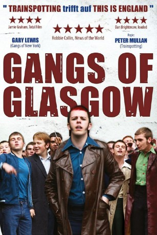
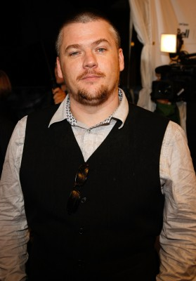
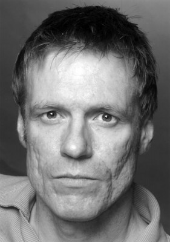

#8057 Gangs of Glasgow
Alternativ: Neds
Auszeichnungen: 2 BAFTA-Awards gewonnen
 
 IMDB-Wertung: 7.0 / 10
IMDB-Wertung: 7.0 / 10  Metascore: 0
Metascore: 0 
Glasgow in den frühen siebziger Jahren. Der Schüler John McGill kommt endlich auf die Secondary School. Er plant eigentlich, seine bisher erfolgreiche Schullaufbahn fortzusetzen, die auf Grund seines zerrütteten Elternhauses, nicht gerade selbstverständlich ist. Aber an der neuen Schule weht ein rauer Wind, denn brutale Gangs haben hier das Sagen. Schon bald gerät John immer tiefer in einen blutigen Strudel der Gewalt, aus dem es kein Entrinnen gibt und dessen Faszination er sich nicht entziehen kann…
Jahr: 2010
Dauer: 123 Minuten
FSK: 16
Land: England Studio: New KSMTonspuren: DTS - ,
Untertitel: Deutsch,
Auflösung: 1080p (1920x816) Größe: 12185 MB
Genre: Drama
Regisseur: Peter Mullan
Drehbuch: Peter Mullan
Soundtrack: Craig Armstrong
Darsteller:
- Martin Bell als Julian
 Peter Mullan als Mr. McGill
Peter Mullan als Mr. McGill- Marianna Palka als Aunt Beth
 Steven Robertson als Mr. Bonetti
Steven Robertson als Mr. Bonetti-  Stephen McCole als Mr. McLeod
 Gary Lewis als Mr. Russell
Gary Lewis als Mr. Russell- Joe Cassidy als Janitor
-  Douglas Russell als PC Connelly
- Joanna Kaczynska als Singing Christian (uncredited)
- Conor McCarron als John McGill
- Greg Forrest als Young John
- Joe Szula als Benny McGill
- Mhairi Anderson als Elizabeth
- Gary Milligan als Canta
- John Joe Hay als Fergie
- Christopher Wallace als Wee T
- Richard Mack als Gerr
- Paul Smith als Key Man
- Khai Nugent als Tam
- Ryan Walker als Sparra
- Lee Fanning als Minty
- Ross Greig als Fifey
- Greg McCreadie als Tora
- Scott Ingram als Casper
- Cameron Fulton als Crystal
- Craig Kerr als Rebel
- Kat Murphy als Claire
- Stefanie Szula als Linda
- Annie Watson als Agnes
- Zoe Halliday als Mandy
- Sara MacCallum als Shelagh
- John Forrest als McCluskey Boy
- Louis McLaughlin als Robert
- David O'Brien als Bernard
- Ross Weston als Danny
- Claire Gordon als Louise
- Marcus Nash als Patrick
- Victoria Rose als Carole
- Chelsey Hanratty als Eileen
- Louise Goodall als Theresa
- Leigh Biagi als Mrs. Cassidy
- Laurie Ventry als Mr. Gallagher
- Alex Donald als Mr. Halligan
- Paul Donnelly als Mr. Hendry
- David McKay als Mr. Holmes
- Peter Lochburn als Mr. Johnstone
- Frank Miller als Mr. Maloney
- Kenny O'Hara als Mr. Maskell
- Lori McLean als Mrs. Brown
- Linda Jane Devlin als Mrs. Matherson
Datei: X:\2010(G-M)\Gangs of Glasgow (2010, FSK16, 1920x816).mkv seit 19.01.2018
Festplatte: HD 2010(G-Z)-2011(A-F)
 Es gibt insgesamt 85 Filme in der Gruppe '2010(G-M)'
Es gibt insgesamt 85 Filme in der Gruppe '2010(G-M)'